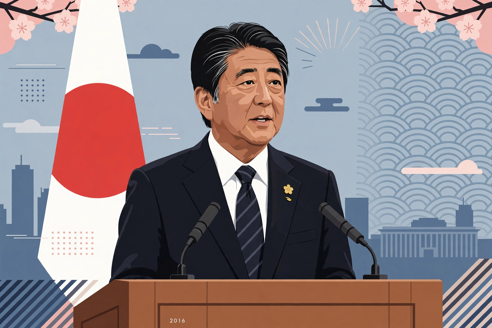

From Wikipedia, the free encyclopedia
Abenomics (アベノミクス) is a set of economic policies implemented by the Japanese government under Prime Minister Shinzo Abe from 2012, during his second premiership. Named after Abe, the programme aimed to revive Japan's economy after two decades of stagnation and persistent deflation — the "Lost Decades" — and is built around the "three arrows" of monetary easing, fiscal stimulus and structural reform.
Under Bank of Japan Governor Haruhiko Kuroda, appointed in 2013, the central bank adopted a 2% inflation target and launched quantitative and qualitative easing (QQE): massive purchases of Japanese government bonds and other assets to expand the monetary base and the money supply. In 2016 the BOJ introduced a negative interest rate and later yield-curve control, capping the 10-year government bond yield near zero. The yen depreciated sharply, boosting exporters' profits.
Large public spending packages were intended to support demand in the short term, combined with a planned path to fiscal consolidation, including consumption tax increases in 2014 and 2019 (the latter after two postponements).
The growth strategy sought corporate-governance reform, labour-market changes (including "womenomics" to raise female participation), trade liberalisation through the Trans-Pacific Partnership, and deregulation in agriculture, energy and healthcare.

Abenomics initially lifted asset prices, corporate profits and employment; unemployment fell to historic lows and the Nikkei 225 rose substantially. However, inflation persistently undershot the 2% target for most of the period, real wage growth was weak, and structural reforms were widely judged incomplete. Critics pointed to Japan's public debt — over 200% of GDP, the highest among advanced economies — and the difficulty of exiting ultra-loose monetary policy. The framework largely continued under Abe's successors after his resignation in 2020 and assassination in 2022.
Categories: Economic policy in Japan · Shinzo Abe · Deflation